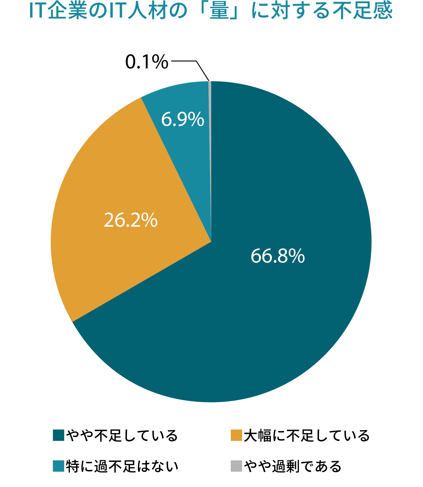
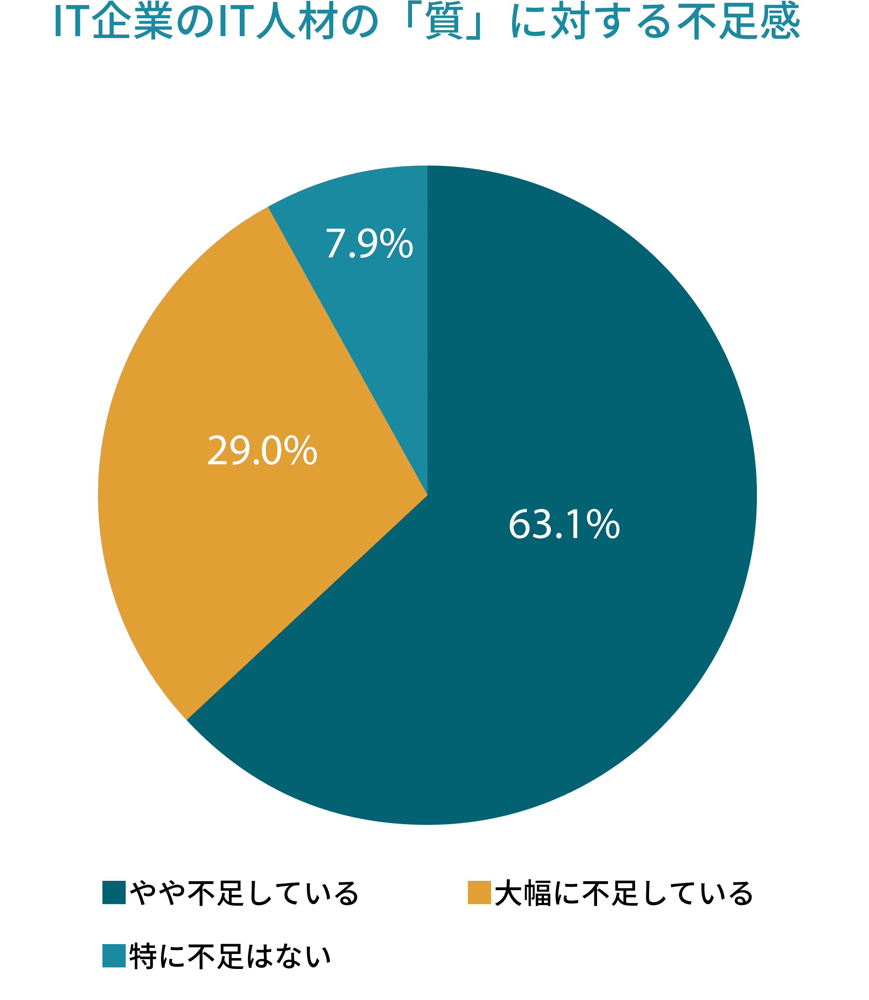
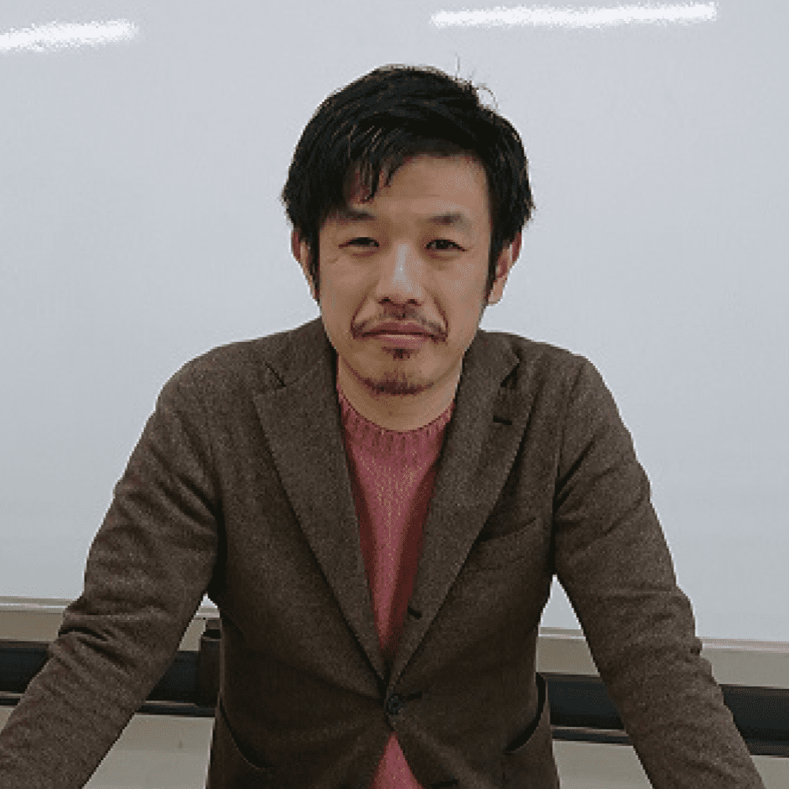
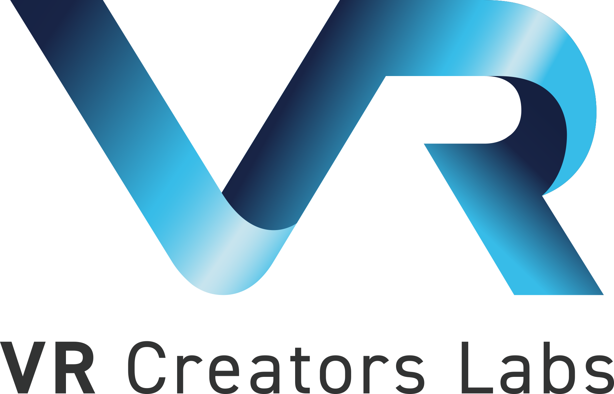
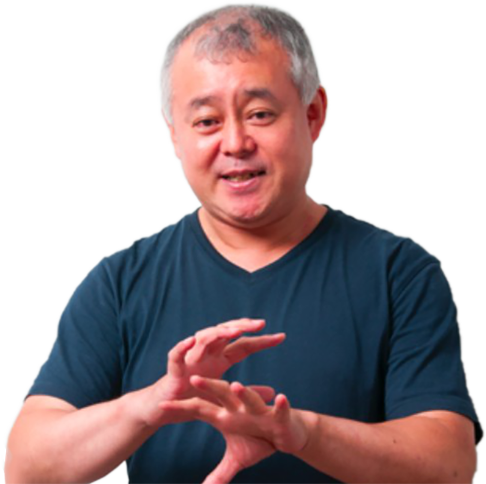
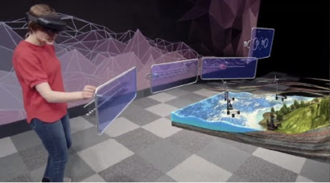
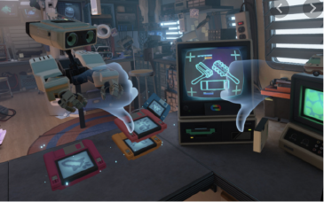
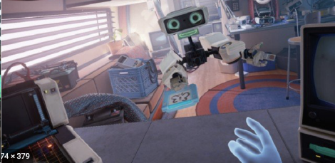

Slackでサポート
専門能力 が 就職 につながる！
会社 がITについて 高 い 能力 を 持 った 人 を 求 めています。


引用元：独立行政法人 情報処理推進機構．IT人材白書2020
日本語 を 勉強 している 留学生 のための
ITプログラミング 教室 が 開講 します
Global TECH Training Centerの
特徴
先生 は 現役 のエンジニアのため、 現場 の 生 の 声 が 聞 けます。
日本 で 就職先 の 多 いITスキルを 学 びます。
ITの 能力 は 日本 だけでなく 世界全体 で 役立 ちます。
授業 では、わかりやすい 日本語 で 学 び、アシスタントもいますので 日本語力 に 自信 がなくても 安心 して 学 べます。
授業 では、IT 会社 でよく 使 われる 実用的 な 日本語 も 学 べます。
JAVAプログラミング
androidやdesktop apps、業務系システム、WEBサービスなど
たくさん使われているプログラミング言語です。
GmailやTwitterにも使われています。
JAVAができる人は、会社からの求人がとても多いです。
JAVAプログラミングを体験しよう！
開催日程と予約はこちら（ボタンをクリック）
会場：赤門会日本語学校
定員：15人（マスクを着けてください）
持ち物：パソコン
講師紹介
JAVAプログラミング講座の監修は、JOY FOR JOY 株式会社。40人以上のエンジニアがいる開発専門の会社です。
JAVAを使ったシステム開発や運用にたくさんの実績があります。経験がたくさんある先生が授業を行います。

JAVA講師
前田 祐輝
JAVA業界はこれからも能力がある人の求人が伸びていきます。
未来のエンジニアの力になりたいと思います。
楽しく知識を身につけて、みんなでIT業界を盛り上げていきましょう！
JAVA講師
政家 伸宏
みなさんが分からない時は丁寧に説明します。
JAVAは自分一人で勉強するのは難しいです。
皆さんがエンジニアとして就職できるように一生懸命サポートします。
講座監修：JOY FOR JOY株式会社
VR・ゲーム開発/Unity
ios、android、Mac、Win、PS4、Xboxなどでゲーム開発できる
Unityを学びます。２Dと３Dのゲーム開発ができます。
ARやVRのゲーム開発も可能です。
Unityでゲーム 開発 を 体験 しよう！

開催日程と予約はこちら（ボタンをクリック）
簡単
なゲーム
制作
をするためのUnityプログラミング
体験会
定員：15人
オンライン開催： 家などWi-Fiがある場所から参加してください
講師紹介
フリーランスエンジニア/技術コンサルタント。大きな会社で技術責任者などを経験し、2011年独立。
VRコンテンツの開発や、会社のコンサルティング、エンジニアへの技術指導をするVR Creators Labsの所長。分かりやすい説明が人気です。
VRコンテンツの開発や、会社のコンサルティング、エンジニアへの技術指導をするVR Creators Labsの所長。分かりやすい説明が人気です。

アシスタント講師
門松 赤音（かどまつ あかね）
Vtuberの先生が授業をサポートします。
あかね先生と一緒に楽しく勉強しましょう！

最先端 のVRディバイスに 対応 します。
新 しいVRの 世界 を 経験 し、 クリエイターを 目指 しましょう！
VR（バーチャルリアリティ）の世界を体験しよう！
実際にVRゴーグルを着けて、ゲームの仮想空間を体験できます。
日程・時間
会場：赤門会日本語学校本館
定員：10人（マスクを着けてください）
持ち物：ありません



Video editor/ 動画 編集
春 からの 授業 では、 動画 編集 ソフトとして 人気 のAdobe PremierePro
の 操作 を 学 びます。
企画 、 撮影 、 編集 の 流 れも 学 びます。
自己 紹介 の 動画 や、 日本 の 魅力 を 伝 える 動画 をつくる 課題 があります。
日本 の 食 、 観光 、 生活 の 魅力 を 世界 全体 の 人 に 伝 えましょう！
YouTubeやInstagramへの 投稿 動画 も 自分 で 編集 できます。
世界 に 向 けて 情報 発信 しましょう！
動画編集を体験しよう！
日程・時間
InstagramやTikTokに！投稿動画を編集しよう！
会場：赤門会日本語学校本館
定員：15人（マスクを着けてください）
講師：鈴谷 現役 Creative director
持ち物：パソコン
安心のサポート
slackで
分
からないことを
家
から
質問
できます。
先生
に
相談
もできます。
仲間
との
会話
もできます。
安心 の 就職 サポート
IT
業界
専門
の
就職
カウンセラーが
就職
相談
を
受付
します。
(無料)
留学生
の
就職
紹介
に
実績
がある、
株式
会社
ヒューマンパワーが
就職
を
全力
でサポートします。
PCレンタルサポート
持
ってくるPCがない人には、PCのレンタルをします。
(有料)
会社 で 使 うIT 日本語 を 学 ぶ
赤門会
日本語
学校
がIT
日本語
を
監修
します。
ITエンジニアが
使
う
日本語
を
正確
に
学
びましょう。